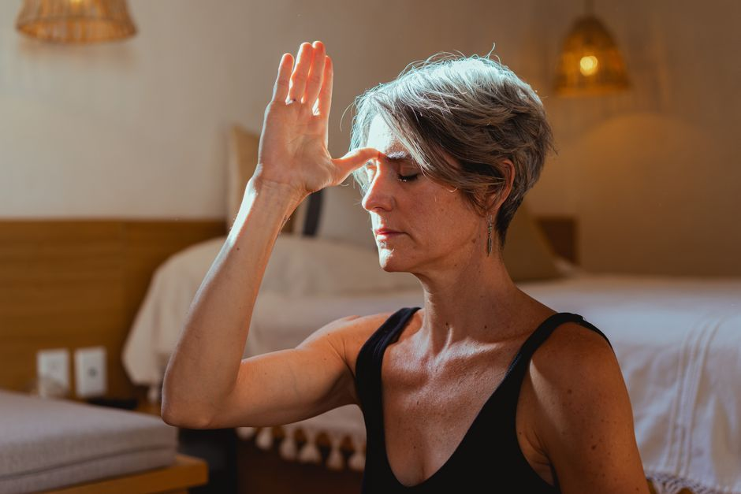

The Ongoing Becoming
How to Protect Your Peace When the World Has Not Changed
Protecting your peace does not mean avoiding people or building a wall around your life. It means learning to stay rooted while the world around you stays loud. The practical tools are discernment, living boundaries, daily anchoring practices, and compassion for yourself on the days you slip. Peace that holds is carried, not hidden. Much of what disturbs that peace is other people's weather, and feeling responsible for everyone else's feelings is where the habit usually begins.
Why does it feel so hard to keep your peace?
Because you changed, and your surroundings did not.
Maybe you have spent months learning to breathe, to rest, to stop bracing. You feel lighter and more at home in your own skin than you have in years. Then you step into the family group chat, the Monday meeting, the evening news, and everything is exactly as frantic as you left it.
This is one of the least talked about parts of healing, and one of the most discouraging. It is easy to conclude the progress was not real. It was. This is simply the next stage: learning to inhabit your wholeness in the places that did not ask for it.
Is protecting your peace the same as avoiding people?
No, and the difference matters.
Healing does not grant you a bubble. You were not made whole so you could retreat into isolation. You were made whole to live your life, your relationships, your work and your calling, from a place of grounded presence. Pulling away from everything that unsettles you can feel like peace for a while. Over time it usually becomes a smaller life, and a nervous system that is more fragile, not less.
The aim is not to find a perfect environment. It is to become someone who can stay steady inside an imperfect one.
What tools actually help you protect your peace?
Four do most of the work.
Discernment. You will meet other people's fears, projections and expectations every day. Discernment is the ability to notice, "that is theirs, not mine," before it lands in your body as a burden. If this is a sore spot for you, how to stop taking things personally goes deeper.
Living boundaries. Old boundaries tend to be rigid walls meant to keep everything out. Healthy ones are alive. They flex with the context, the relationship and how much capacity you have today. A boundary is not a punishment for someone else. It is the structure that keeps you in alignment.
Anchoring practices. Nobody stays steady by accident. You stay steady by returning to your rhythms: your breath, your morning stillness, the truth you speak to yourself. These are what stop you drifting back into old reactive patterns when the pressure rises. For in-the-moment help, see grounding techniques for overwhelm.
Compassion as soil. You will still react sometimes. You will brace, snap, or shut down. Please do not use your healing as a whip. Compassion is the soil the rest grows in, and it lets you say, "This is hard, I am human, and I can return to my center."
What does your body have to do with keeping your peace?
Almost everything. Peace is not only a thought you hold. It is a physical state your nervous system either can or cannot access.
When your body reads a situation as threatening, the stress response takes over faster than reasoning can. The National Institute of Mental Health's fact sheet on stress describes how ongoing stress affects sleep, mood, digestion and the immune system, which is why chronically unsettled environments wear on the whole body, not just the mind.
That is also why the practical side of this is so physical. A slower exhale before you answer. Unclenching your jaw in the meeting. Feet on the floor during the difficult phone call. Each one tells your body that this room, however loud, is survivable. Supporting that shift is the core of emotional overwhelm and nervous system support.
How do you know your peace is becoming your own?
There is a moment most people remember. You are in the middle of a situation that would once have undone you. You wait for the familiar spiral to start, and it does not come. Your breath stays deep. Your heart stays open. The ground is still under your feet.
And you realise, quietly: I can stay whole here, too.
Jesus described exactly this kind of peace: "Peace I leave with you; my peace I give you. I do not give to you as the world gives." It was never meant to depend on the room being calm.
Pause for reflection
Rest both hands on your knees and feel the rhythm of your own breath.
Ask yourself gently: Where in my daily life am I learning to stay whole? And what support do I need right now to keep showing up as my most aligned self?
You are not fragile. You are not just surviving in a loud world. You are learning to bloom in it.
FAQ
How do I protect my peace around family?
Start small and specific. Decide in advance how long you will stay, which topics you will step away from, and one anchoring practice you will use while you are there. Boundaries with family often work best when they are quiet and consistent rather than announced.
Is it selfish to protect your peace?
No. A regulated nervous system makes you more present to the people you love, not less. Protecting your peace is what allows you to keep showing up without resentment or burnout.
What if I keep losing my peace no matter what I try?
That is common, and it is usually information rather than failure. A body that has been braced for a long time may need more support than willpower can give. If anxiety or low mood feels constant, please talk with your physician, and if you would like gentle, root-cause support alongside that, you can reach out through the contact page or begin with my free guide.
This article is for educational purposes and is not medical advice. It is not intended to diagnose, treat, cure, or prevent any disease. Please work with a qualified practitioner, and consult your physician before making changes to your health routine.
In Renewal,
Lynette Wing
Founder of Renewal Health
Clinical Homeopath, Naturopath, Mind-Body Practitioner
Dedicated to root-cause healing and whole-person alignment. Guiding clients to emerge, align, and live fully, restoring vitality, clarity, and sustainable wellness. About Lynette